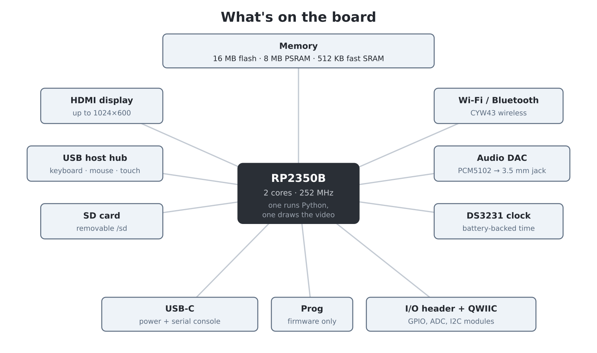
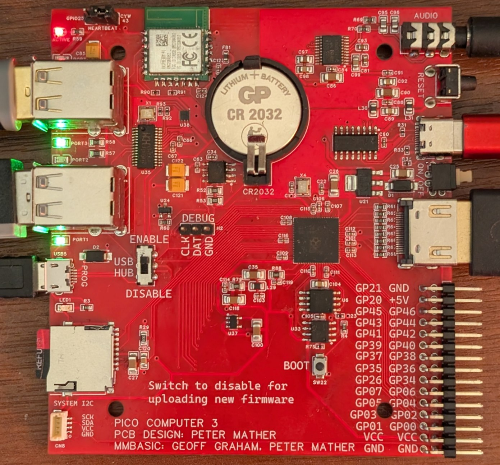

Switch on the Pico Computer 3 and, a moment later, a prompt appears on the screen:
MicroPython on PICO COMPUTER 3 with RP2350B
>>>(Your screen will also show the MicroPython and firmware version
numbers, which change as the software is updated.) That
>>> is an invitation. The machine is waiting for
you to tell it what to do — and the language it speaks is
Python, the most widely used programming language in
the world.
That makes the Pico Computer 3 a slightly unusual machine, and it is worth taking a page to explain what it is before we plug anything in.
Most computers today hide programming away. A laptop starts up into a desktop full of icons, and writing a program means installing special software, and the machine does a thousand other things that compete for your attention.
Home computers of the 1980s — machines like the BBC Micro, the ZX Spectrum and the Commodore 64 — were different. You switched them on and, within a second, you were in the programming language. The machine’s whole purpose was to be programmed, and an entire generation learned to code because the invitation was right there on the screen.
The Pico Computer 3 revives that idea with modern parts and a modern language. There is no desktop and nothing to install. You plug in a monitor and a keyboard, switch on, and you are programming. Everything the machine can do — draw graphics, play music, read the keyboard and mouse, browse its files, connect to Wi-Fi — you do by typing commands, and anything you can type as a command you can put in a program.
Coming from MMBasic: this will feel familiar — the Pico Computer 3 is a close cousin of the PicoMite, and much of its firmware is ported directly from PicoMite MMBasic. The difference is the language: Python instead of BASIC. Throughout this book, boxes like this one translate MMBasic ideas into their Python equivalents.
Also on a Colour Maximite 2. Everything in this book also runs on a Colour Maximite 2 — the G1, G2 or G3 — with its MicroPython app: the same MicroPython, the same libraries, every example program. Appendix K lists the few differences: how you start it, where your files are, and which connector pin is which.
Under the hood, the Pico Computer 3 is built around the RP2350B, a chip designed by Raspberry Pi. Here is what you are getting, in plain terms:

The brain. The RP2350B has two processor cores running at 252 MHz (they can be pushed to 378 MHz — chapter 35). One core runs your Python programs; the other is dedicated full-time to generating the video picture, which is why graphics feel effortless. By the standards of the machines that inspired this one, it is a monster: thousands of times faster than a BBC Micro, with tens of thousands of times more memory.
Memory. Three kinds, and the distinction will matter later:
The display. A standard HDMI socket drives any HDMI monitor or TV. The machine starts up at 640 × 480 in 256 colours, and can go as high as 1024 × 600. The video signal is generated by the chip itself — there is no separate graphics card.
The keyboard, mouse and touch. The board has its own built-in USB hub (a CH334U) supporting up to four devices at once, so a normal USB keyboard, a mouse and even a touch screen all plug straight in. These are host sockets: they are where you plug devices in, not a way to connect the Pico Computer to a PC — the board is the computer now, not an accessory.
Two more ports. A USB-C socket supplies the board’s power (through a push-on/push-off switch) and doubles as the serial console — a second copy of the Python prompt that a PC can connect to; you will use it to send files to the machine and as a lifeline if the screen is ever misconfigured. A micro-USB socket labelled Prog is used only for installing firmware. Both are explained in chapter 2.
Storage you can carry. An SD card slot, mounted as
/sd. Cards can be swapped while the machine is running, and
because they are standard FAT cards you can also fill them from a PC —
handy for images and music.
Sound. A proper audio DAC (a PCM5102) feeds a
standard 3.5 mm stereo jack — plug in headphones or powered speakers.
The firmware can play WAV, MP3 and FLAC files, generate tones, run a
four-voice synthesiser, and play classic .mod tracker music
— chapter 20.
A clock that keeps time. A battery-backed DS3231 real-time clock keeps the date and time even when the machine is unplugged, so your programs always know what day it is.
Wi-Fi and Bluetooth. A CYW43 wireless chip connects the machine to your network and the internet — chapter 30. (A small status LED also lives on this chip; you will blink it in the next chapter.)
Room to grow. Like its Raspberry Pi Pico relatives, the board can control electronics you add yourself. An I/O header exposes over twenty general-purpose input/output (GPIO) pins plus power, for LEDs, buttons, sensors and motors you wire up; and a QWIIC socket accepts the huge family of plug-together I2C modules (SparkFun Qwiic, Adafruit STEMMA QT, Pimoroni Qw/ST) with no soldering at all — chapter 32.

A computer, for all its speed, does nothing on its own. A program is a list of instructions, written out in advance, that the computer follows exactly and very, very fast. Programming is the craft of writing those instructions — and the fun of it is that a correct list of instructions can do apparently magical things: draw a spiral, run a game of Breakout, fetch the weather from the internet.
The catch is that the computer follows your instructions exactly, including the wrong ones. It has no idea what you meant — only what you typed. Learning to program is partly learning a language, and mostly learning to think precisely enough to say what you mean. This book teaches both, in small steps, with something to show on screen at every step.
The instructions have to be written in a language the machine understands. This machine speaks Python, and it is hard to imagine a better first language:
if lives == 0: print("Game over") means exactly what it
looks like it means.Strictly, the machine runs MicroPython — a lean, real implementation of Python built for small computers. It is Python: the language, the way of thinking, and almost every program in this book would run unchanged on a desktop. But it is not quite desktop Python — it trims a few corners to fit a machine this size, and those differences, though small, can catch you out if you assume they aren’t there. This book points them out as they arise.
The Pico Computer 3 also adds things that plain
MicroPython has no notion of: friendly one-word commands like
run, edit and ls, the file
manager, and the graphics, sound and input helpers that make this a
computer and not just a chip. These are genuine conveniences —
but they live on this machine, not in MicroPython everywhere.
So whenever a feature is one of these home comforts, the book flags it
Pico Computer 3 specific and, where it helps, shows the
standard MicroPython way beside it. That way you always know which
skills travel to other boards and which stay here.
Coming from MMBasic: Python’s biggest culture shock is that layout matters — where BASIC marks a block with
FOR…NEXTorIF…ENDIF, Python marks it by indenting the lines inside. You will meet this properly in chapter 7, and the full translation table is appendix B.
The book is a course, not a reference manual — chapters build on each other, and each one is built around something you make. Part I (you are in it) gets the machine running and teaches you to drive it. Part II teaches the Python language itself, using the screen so every idea is visible. Part III covers graphics, sound and input; Part IV builds four complete games; Part V builds real applications, from GUI programs to internet-connected gadgets; Part VI looks under the hood.
Three habits will serve you well from the start:
When you eventually need the fine detail of some command, that lives in the Pico Computer 3 User Manual — the machine’s reference document. This book points there whenever you are ready for more.